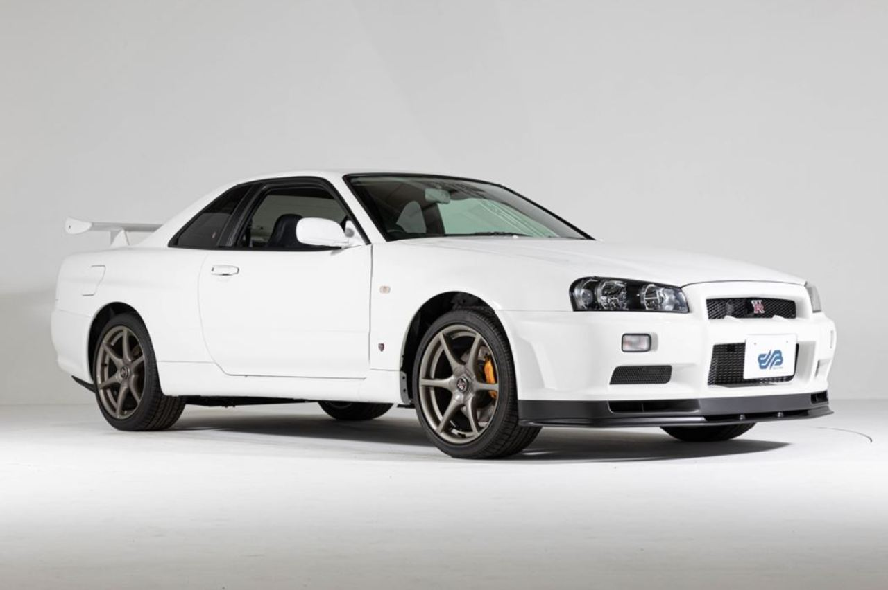
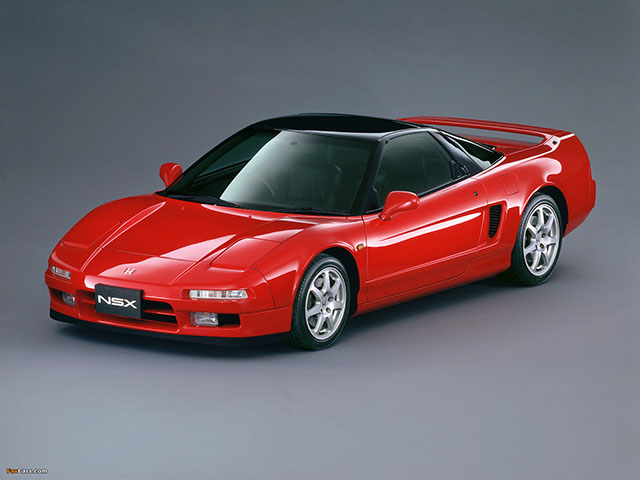
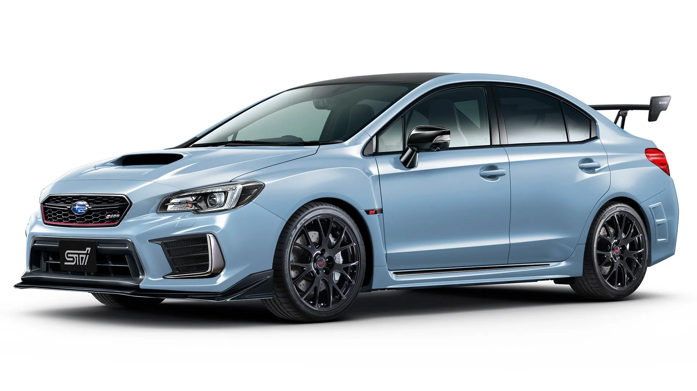
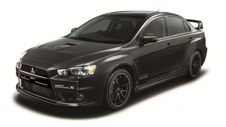

Nissan R34 GT-R
- 320 Caballos
- 287 km/h
- Modelo 1998
El Nissan Skyline R34 es un automóvil tipo cupé fabricado por la marca de coches japonesa Nissan que cuenta con un motor delantero longitudinalmente y tracción en las cuatro ruedas.
Honda NSX
- 274 Caballos
- 270 km/h
- Modelo 1990
El Honda NSX, es un automóvil deportivo de dos puertas biplaza con motor central-trasero, producido por fabricante japonés Honda entre 1990 y 2005, ofreciendo diferentes versiones tanto en carrocerías cupé como targa
Subar WRX STI
- 300 Caballos
- 255 km/h
- Modelo 2016
El Subaru WRX STI es una variante del sedán Subaru WRX producido por la empresa de tuning interna Subaru Tecnica International entre 2014 y 2021. Sucedió al Subaru Impreza WRX STI. El VA WRX STI fue el último vehículo producido con el famoso motor EJ257 .
Mitsubishi lancer evolution
- Caballos 290
- 240 km/h
- Moledo 2011
El Mitsubishi Lancer Evolution, coloquialmente conocido como Evolution o Evo, es un sedán deportivo compacto de cuatro puertas, producido por el fabricante japonés Mitsubishi Motors desde 1992 hasta 2016. Estaba basado en el mismo monocasco que el Mitsubishi Lancer estándar.